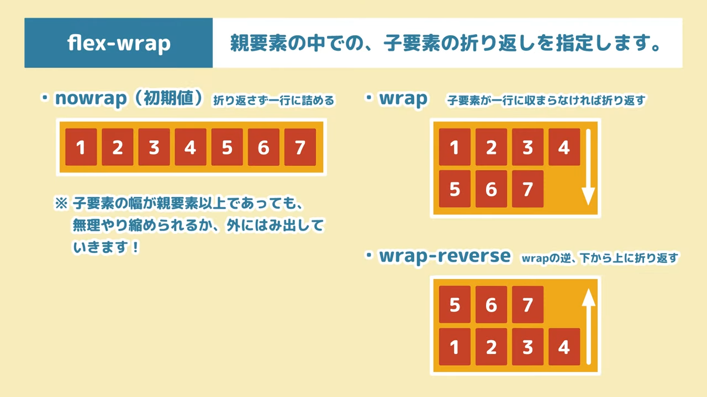

レイアウト調整が簡単にできる、便利なCSS機能。
要素の並び方や配置を柔軟に操ることができる。
対応するプロパティ群を指定することで使える。
Flexboxでできること
- 要素の並び順を変える
- 要素の折り返し型を決める
- 要素の配置を決める
- 要素の幅や高さを自由自在に指定する
htmlをほとんど変更せずに簡潔なCSSの指定のみで多様なレイアウトを可能にしてくれる。
特にレスポンシブルデザインの時に便利。
使い方
- 「親要素＞子要素」の構造になっているときに使う。
- 親要素に書き指定
「display :flex;」・・・親要素がブロックレベル要素
「display :inline-flex;」・・・親要素がインライン要素
Flexboxのそれぞれのプロパティには「初期値」というものがあり、親要素に「display :flex;」、「display :inline-flex;」を指定した時に効いているスタイルのこと。
- 「flex-direction」
- 「Flex-wrap」
- 「Flex-flow」
Flexboxのプロパティ（親要素に指定するもの)
親要素の赤で、子要素が並ぶ向きを指定

「Flexbox」における「主軸」と「交差軸」とは？
「主軸」・・・要素が横に並んでいく方向の軸のこと。
「交差軸」・・・主軸の垂直方向に当たる軸
例)rowは左→右と横方向が主軸、縦方向に行が追加されるので交差軸は縦方向。
columnは上から下へ要素が並ぶので縦方向が主軸、横方向が交差軸
このように主軸と交差軸を縦と横で入れ替えている
親要素の中での、子要素の折り返し方を指定します。
初期値「nowrap」だと折り返さずに画面いっぱいに子要素が並ぶので、折り返ししない場合はwrapプロパティの指定をまず疑い「wrap」に指定。
flex-directionとflex-wrapを一括指定します。
このプロパティで簡略化できる。
Flexboxのプロパティ（子要素の配置の仕方を決めるプロパティ)
主軸の水平方向における、子要素の揃え方を指定します。
「flex-start」,「flex-end」,「center」は「text-alignプロパティ」と同じような使い方をするイメージ。
「space-between」:2カラム、3カラムのレイアウトを作るのに便利。
主軸の垂直方向に置ける、1行あたりの子要素の揃え方を指定します
もしレイアウト崩れに困ったときは・・・
align-itemsを初期値「stretch」以外に設定し、子要素に横幅、高さを指定。
主軸の垂直方向に置ける、複数行の時の子要素の揃え方を指定します
複数行がどのように揃うかを指定できる。親要素にも高さが指定されていて子要素にも高さがある場合に効きます。 flex-wrap:wrap;,flex-wrap :wrap-reverse;のように折り返しが発生する時（つまり複数行）にしか使えない。
flex-direction: column;やflex-direction: column-reverse;が指定してあるときの考え方
flexboxを使いたいとき
親要素がブロックライン要素なら「display: flex;」
親要素がインライン要素なら「display: inline-flex;」
「flex-direction」:主軸、交差軸を入れ替える。要素の並ぶ方向が交わる。
「flex-wrap」:要素の折り返しを設定する。
justify-content:主軸と水平方向の子要素の揃え方
align-items:主軸と水平方向の子要素の揃え方（1行当たりの子要素の並び方）
align-content:主軸と垂直方向の子要素の揃え方（複数の行の、親要素の中での配置の仕方）
align-self:主軸の垂直方向における、1行当たりの子要素の揃え方を個別指定します。
親要素に指定できる「align-items」と同じ調整ができるが、「align-self」は子要素に指定でき、個別に指定できる。
order:子要素の並び順を指定します。
親要素の中にある複数の子要素に対し「数字」を指定し、並び順を変える。
orderの値による並び順
負の数 → 0=orderを指定していない要素 → 正の数
flex:親要素の中での、子要素の比率を指定します。
親要素の中にある複数の子要素に対し「数字」を指定し親要素の横幅を基準に、どのような比率で幅を決めるかを指定できるプロパティ。
また、一部のプロパティの横幅を設定し、flexプロパティを指定した子要素に残りの横幅を割り当てるような使い方もできる。
flexは3つのプロパティを一括指定しているプロパティ
「flex-grow」:子要素の伸び率（余白の分配）を指定する。
「flex-shrink」:子要素の縮み率（余剰の分配）を指定する。
「flex-basis」:子要素の幅を指定します。
Flexboxでは親要素に指定するプロパティと、子要素に指定するプロパティを使いこなすことで、簡単、簡潔にレイアウト調整ができる。